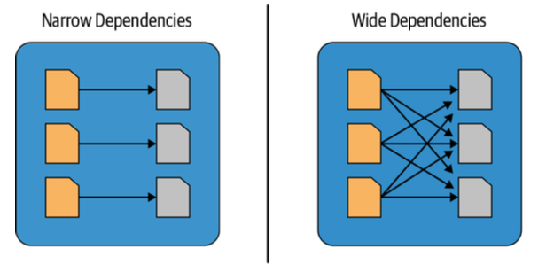

In this article we’ll start to explore some basic functions belonging to Spark DataFrame API, in particular how to read and how to write Spark DataFrames.
This guide has been tested on macOS 14.3.1.
You can find the code used in this mini-guide (and in the next ones) in the following associated repository: https://github.com/simdangelo/apache-spark-blog-tutorial.
Note that a section of this guide requires to spin up a Docker Container, so you have to install Docker Desktop on your machine.
0. Resources:
- “Spark Essentials with Scala” course by Daniel Ciocîrlan (link here: https://rockthejvm.com/p/spark-essentials)
- Learning Spark: Lightning-Fast Data Analytics - Jules S. Damji, Brooke Wenig, Tathagata Das, and Denny Lee (Second Edition 2020, O’Reilly Media)
- coder2j Youtube Channel (https://www.youtube.com/watch?v=9MlZW9QeLM8&t=29s&ab_channel=coder2j)
1. SparkSession and SparkContext
Let’s create a new Scala file by creating a new Object (as I explained in my previous post here https://simdangelo.github.io/blog/run-spark-application/) and we call it DFBasics1.
The first thing you have to do to start Spark Applications is to instantiate a SparkSession:
val spark = SparkSession.builder()
.appName("DataFrames Basics")
.config("spark.master", "local")
.getOrCreate()
Without going too much into details, I’ll try to provide some hints on what SparkSession is, and why it replaced SparkContext since Spark 2.0.
So, let’s make an introduction of both and then we’ll consider the differences with respect to specific aspects:
SparkSession:- introduced in Spark 2.0 and it represents the unified entry point for interacting with Spark;
- combines functionalities of SparkContext, SQLContext, HiveContext, StreamingContext;
- supports multiple programming languages (Scala, Java, Python, R);
- offers higher-level API for structured data processing using DataFrames and Datasets APIs.
- supports structured querying using SQL or DataFrame and Dataset APIs;
- provides data source APIs, machine learning algorithms, and streaming capabilities.
SparkContext:- Represents the connection to a Spark cluster and it was the entry point in earlier versions of Spark (1.x).
- coordinates task execution across the cluster;
- core functionality for low-level programming and cluster interaction;
- creates RDDs;
Summing up:
SparkContextis low-level, whileSparkSessionis higher-level;SparkSessionsimplifies interaction and supports structured data processing;SparkSessionis the recommended entry point for Spark Applications.
2. Read a DataFrame
2.1. What is a Spark DataFrame?
Spark DataFrames are distributed in-memory collections of data, organized into tables with rows and columns and each table has a schema (meaning that column has a name and a specific data type [integer, string, array, etc.]).
We can schematically sum up the Spark DataFrame into some bullet points:
- it is a distributed collection of rows that are conforming to that schema;
- it is the schema, which is the description of the attribute of the data;
- think of a DataFrame as a table, which is split in between multiple nodes in a Spark Cluster.
Let’s list some properties of Spark DataFrames (from now on I’ll call them as DFs).
- Since Spark DFs are basically tables conforming to a schema, it’s very important to know that these types are known to Spark when DF is being used (available at runtime), not a compile time (it’s possible to make them available at compile time with Dataset API).
- Spark DFs need to be distributed and that’s why Spark uses Partitioning. Partitioning means that the data is being split into files and shared between nodes in the cluster. Partitioning impact the processing parallelism of tour data. More partition, for example, may mean more parallelism. But if you have a thousand partitions and a single node to process them, the parallelism is 1 because you only have one node to process your data. Conversely, if you have one partition and a million of distributed nodes in your Spark Cluster, the processing parallelism will still be 1. The way we do partitioning is a big performance topic in Spark.
- DFs are immutable, meaning that they cannot be changed once created. If you want to modify them, you will create new DF via transformations.
Speaking about transformations, there are a bunch of transformation types:
- narrow transformation: one input partition contributes to at most one output partition (e.g.
filter()) - wide transformation: input partitions (one or more) creates many output partitions (e.g.
orderBy()). These operations are known as shuffles, which are data exchanges between cluster nodes. Shuffling occurs in wide transformations and it’s a massive performance topic because it can impact the time that your job takes by orders of magnitude.
Here’s a visual representation:

Source: Learning Spark: Lightning-Fast Data Analytics - Jules S. Damji, Brooke Wenig, Tathagata Das, and Denny Lee (Second Edition 2020, O’Reilly Media)
How DFs work at runtime?
One of the most important mechanism in the whole Spark framework is the concept of Lazy Evaluation: Spark will wait until the last moment to execute the DFs transformations. This is because in complex projects it’s very usual to apply more sequential transformations to DFs, so Spark create a graph (called DAG, Directed Acyclic Graph), which is a sort of tree with all the transformations applied and it combines them in the best possible way to speed up the final computation.
Example
Let’s assume I want to read a table from a specific source (S3 Bucket), select only rows where country=='Italy' and store this new DF into a sink. The sequential operations are:
- read the entire table from the source;
- filter only the rows matching the filter;
- store the new DF into a sink.
Since Spark wait until the last moment to execute the DFs transformations, it knows in advance every single step that it will have to take to store the new DF, so it creates a plan where it’s able to perform some optimizations. As regard the example above, Spark optimizes the operations by creating a new set of operations:
- read only the rows matching the filter from the source;
- store the new DF into a sink.
It’s easy to understand that there’s no need to load the entire table from the source since I am only interested to specific records. Specifically, this kind of optimization is called Pushdown Filter.
Talking about plans, there are actually 2 plans that Spark will compile:
- the Logical Plan, which is the DF dependencies graph plus all the descriptions of the narrow and wide transformations that Spark will have to execute. So Spark knows in advance every single step.
- the Physical Plan, meaning that Spark will optimize the sequence of steps and it will know which node will execute which parts of the transformations.
The last concept we have to know to understand how DFs work at runtime is the concept of action. An action represents very specific Spark functions applied on DFs (like .show(), .count(), .write(), etc.) that triggers the beginning of the Spark code. What does that mean? Earlier while talking about transformations, we said that “[…] Spark wait until the last moment to execute the DFs transformations […]”; so what is this “last moment”? Well, the “last moment” is represented by an action. So, as soon as Spark sees an action function, it will start the creation of the Logical and the Physical plans in order to create the new DF.
This is the power of Lazy Evaluation.
2.2. Create a DataFrame by hand
Let’s explore various solutions to create a DF by hand.
-
.toDF()def manualDF_v1(): Unit = { val orders = Seq( ("sandwich", "big", 10, "2024-03-24"), ("pizza", "small", 15, "2024-03-22") ) import spark.implicits._ val df = orders.toDF("food", "size", "cost", "order_date") df.printSchema() df.show() }After calling this function in the
mainfunction of the Scala project, we’ll see in the console the result:This method can be applied to a sequence of objects (
Seq), but to access thetoDF()method we have to importspark.implicits._.The limitation of this method is that we have no control on the schema and the nullable flag.
-
createDataFrame()This method overcomes the limitations of the
toDF()method because now we have control over complete schema customization:def manualDF_v2(): Unit = { val orders = Seq( Row("sandwich", "big", 10, "2024-03-24"), Row("pizza", "small", 15, "2024-03-22") ) val schema = StructType(Seq( StructField("food", StringType, nullable = true), StructField("size", StringType, nullable = true), StructField("cost", IntegerType, nullable = true), StructField("order_date", StringType, nullable = true) )) val df = spark.createDataFrame(spark.sparkContext.parallelize(orders), schema) df.printSchema() df.show() }- Note that now
ordersobject is not anymore aSeq[(String, String, Int, String)], but it’s aSeq[Row]. - Note that i was not able to cast
order_dateasDateTypedirectly in the schema because otherwise Spark returns an error (I don’t know if it’s possible to do that in some other ways). It’s possible of course to cast toDateTypeafter creating the DF.
- Note that now
2.3. Create a DataFrame from CSV file
We will download a CSV file from Kaggle using the following link: https://www.kaggle.com/datasets/mikhail1681/walmart-sales and we will use this file as an example dataset. Let’s put this CSV file in src/main/resources/data path.
There are several solution to read a CSV file:
def readCsv_v1(): Unit = {
val df = spark.read
.format("csv")
.option("inferSchema", "true")
.option("header", "true")
.load("src/main/resources/data/Walmart_sales.csv")
df.show(5)
}
or alternatively:
def readCsv_v1(): Unit = {
val df = spark.read
.format("csv")
.option("inferSchema", "true")
.option("header", "true")
.option("path", "src/main/resources/data/Walmart_sales.csv")
.load()
df.printSchema()
df.show(5)
}
or alternatively (I prefer this last version):
def readCsv_v1(): Unit = {
val df = spark.read
.option("inferSchema", "true")
.option("header", "true")
.csv("src/main/resources/data/Walmart_sales.csv")
df.printSchema()
df.show(5)
}
You can also specify the delimiter of the CSV file in case Spark is not able to recognize it:
def readCsv_v1(): Unit = {
val df = spark.read
.option("inferSchema", "true")
.option("header", "true")
.option("delimiter", ",")
.csv("src/main/resources/data/Walmart_sales.csv")
df.printSchema()
df.show(5)
}
The meaning of all the .options() is quite straightforward, so I’ll not explain them. The result is:

Note that it’s not suggested to use .option("inferSchema", "true") in production environment since we have no control on the schema.
Indeed it’s always better to explicitly define the schema:
def readCsv_v2(): Unit = {
val csvSchema = StructType(
Array(
StructField("Store", StringType),
StructField("Date", DateType),
StructField("Weekly_Sales", DoubleType),
StructField("Holiday_Flag", IntegerType),
StructField("Temperature", DoubleType),
StructField("Fuel_Price", DoubleType),
StructField("CPI", DoubleType),
StructField("Unemployment", DoubleType)
)
)
val df = spark.read
.schema(csvSchema)
.option("header", "true")
.option("dateFormat", "dd-MM-yyyy")
.csv("src/main/resources/data/Walmart_sales.csv")
df.printSchema()
df.show(5)
}
Note that, if you cast a column as DateType, I suggested to set the option .option("dateFormat", "dd-MM-yyyy") with the correct date format. Without it, I got weird results. The results is:

2.4. Create a DataFrame from JSON file
The principles are the same as the CSV case, so we’ll not spend too much effort on this.
Let’s download a JSON file from Kaggle as example on this link https://www.kaggle.com/datasets/rtatman/iris-dataset-json-version and let’s put it into the same path of the CSV file:
def readJson(): Unit = {
val jsonSchema = StructType(
Array(
StructField("sepalLength", DoubleType),
StructField("sepalWidth", DoubleType),
StructField("petalLength", DoubleType),
StructField("petalWidth", DoubleType),
StructField("species", StringType),
)
)
val df = spark.read
.schema(jsonSchema)
.json("src/main/resources/data/iris.json")
df.printSchema()
df.show(5)
}
Here’s the result:
Of course you can specify all the option() that we have seen in the previous CSV case.
PS. I honestly don’t know why the first row is NULL.
2.5. Create a DataFrame from Parquet file
Parquet format file it is an open source, compressed, binary data storage format optimised for fast reading of columns and it works so well with Spark that Parquet is the default storage format for DF. One of the advantage is that it is very predictable, so you don’t need so many options that you had on CSVs.
Let’s download a parquet file from this link https://www.tablab.app/datasets/sample/parquet and let’s put it into the src/main/resources/data/ path.
def readParquet(): Unit = {
val df = spark.read
.parquet("src/main/resources/data/MT cars.parquet")
df.printSchema()
df.show(5)
}

2.6. Create a DataFrame from a remote Database (Postgres)
Reading from a remote DB and passing the data to Spark is a common pattern because to analyse Big Data there is often being migrated from databases to Spark.
In order to read from Postegres DB, we need to create it and insert some sample data. Let’s follow these steps:
-
Let’s modify the
build.sbtfile by adding the PostgreSQL JDBC Driver:ThisBuild / version := "0.1.0-SNAPSHOT" ThisBuild / scalaVersion := "2.13.13" lazy val root = (project in file(".")) .settings( name := "spark-application-scala" ) val sparkVersion = "3.5.0" val postgresVersion = "42.6.0" libraryDependencies ++= Seq( "org.apache.spark" %% "spark-sql" % sparkVersion, "org.postgresql" % "postgresql" % postgresVersion )Now load the sbt changes clicking on the float button just appeared in the IDE.
-
Let’s create a new folder in the root project folder called
postgresDBand create a new file calledinit.sql:-- Create database DROP DATABASE IF EXISTS my_database; CREATE DATABASE my_database; -- Connect to the newly created database \c my_database; -- Create table DROP TABLE IF EXISTS my_table; CREATE TABLE my_table ( id SERIAL PRIMARY KEY, first_name TEXT, last_name TEXT, gender TEXT, birth_date DATE ); -- Insert data into the table INSERT INTO my_table (first_name, last_name, gender, birth_date) VALUES ('John', 'Doe', 'M', '1990-03-01'); INSERT INTO my_table (first_name, last_name, gender, birth_date) VALUES ('Annah', 'Williams', 'F', '1980-08-15'); -
Create a
docker-compose.ymlfile in the root project folder and put this code inside:version: '2' services: postgres: image: postgres:latest container_name: postgres environment: - "TZ=Europe/Amsterdam" - "POSTGRES_USER=docker" - "POSTGRES_PASSWORD=docker" ports: - "5432:5432" volumes: - "./postgresDB:/docker-entrypoint-initdb.d" -
Go to the root project folder from the terminal and spin up the Postgres Docker Container:
docker compose up
Now that the environment is correctly set, go back in the Spark application and write the Scala code:
def readPostgres(): Unit = {
val df = spark.read
.format("jdbc")
.option("driver", "org.postgresql.Driver")
.option("url", "jdbc:postgresql://localhost:5432/my_database")
.option("user", "docker")
.option("password", "docker")
.option("dbtable", "my_table")
.load()
df.printSchema()
df.show()
}
After calling this function from the main function, here’s the result you should see in the console:
3. Write a DataFrame
When writing DataFrame outputs, you have the flexibility to select from various formats such as JSON, CSV, TXT, Parquet, and more. While we’ll focus on the Parquet file here, as it’s commonly used, the same principles apply to all other formats with simple adjustments.
Let’s read the CSV file Walmart_sales.csv in the data folder and let’s write it into both JSON and Parquet files into a new path:
def readCsv_file(): DataFrame = {
val csvSchema = StructType(
Array(
StructField("Store", StringType),
StructField("Date", DateType),
StructField("Weekly_Sales", DoubleType),
StructField("Holiday_Flag", IntegerType),
StructField("Temperature", DoubleType),
StructField("Fuel_Price", DoubleType),
StructField("CPI", DoubleType),
StructField("Unemployment", DoubleType)
)
)
val df = spark.read
.schema(csvSchema)
.option("header", "true")
.option("dateFormat", "dd-MM-yyyy")
.csv("src/main/resources/data/Walmart_sales.csv")
df
}
def writeParquet(): Unit = {
readCsv_file().write
.mode("overwrite") // or (SaveMode.Overwrite)
.parquet("src/main/resources/data/output/walmart_sales.parquet")
}
def writeJson(): Unit = {
readCsv_file().write
.mode("overwrite") // or (SaveMode.Overwrite)
.json("src/main/resources/data/output/walmart_sales.json")
}
This is what we got by calling these two functions:

The interesting part is to compare the size of these two files so that we can understand how well Parquet file is optimzed (106 KB vs 995 KB):


Note that it’s very likely that if you will save a big DF, you would see many more of these part-unique_identifiers.snappy.parquet or part-unique_identifiers.json files.